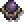

The Void
A The Void egy sötét és titokzatos pálya a játékon belül, ahol az idő és tér határai összezavarodnak, és a semmi végtelen mélységei várnak a játékosra. Ez a pálya egy olyan világba kalauzol el, ahol mindent a sötétség ural.
Olyan, mintha egy sötét álom valósulna meg, ahol a játékosoknak meg kell védeniük a vékony határvonalat a világ és a semmi között. Az erők a sötétség mélyéről törnek elő, és készek arra hogy elpusztítsanak mindent.
Ahogy a játék halad előre, újabb és erősebb ellenfelek törnek majd elő ebből a sötétségből, kihívást adva a játékosoknak, hogy folyamatosan finomítsák stratégiáikat és fejlesszék a tornyukat a lehetőségek tárházából.
A sötétség, és káosz hatására a játékosnak egy nehezítéssel kell szembenéznie.(Lásd a táblázatban)
The Void
Pályához tartozó effekt:
Void Corruption:
Az ellenségek a támadasaikkal lecsökkentik a torony  életerejét 10%-al, és a
életerejét 10%-al, és a  védelmét 5%-al.
védelmét 5%-al.
(EZEK A HATÁSOK MAXIMUM 5x TUDNAK HALMOZÓDNI!)